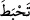
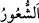
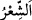
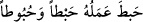

Ben ise yüksek sesli bir kimseyim. Dolayısıyla amelimin boşa gitmesinden
korkuyorum.” Rasûlullah (s.a.) şöyle buyurdu: “Sen öyle değilsin. Muhakkak ki sen
hayırla yaşar ve hayırla ölürsün. Sen kesinlikle cennet ehli bir kimsesin.” Rasûlullah
(s.a.) doğru söylemişti. Gerçekten de Sâbit (r.a.) hayırla öldü. Müseylemetü’l-Kezzâb
ile savaş günü üzerinde zırhı olduğu halde şehîd oldu.[163]
Sahâbeden bir kimse vefâtından sonra Sâbit (r.a.)’ı rüyâsında gördü. Ona şöyle dedi:
“Bil ki Müslümanlardan falanca adam benim zırhımı çıkarıp götürdü. O adam
askeriyenin falanca yerindedir ve yanında bağlanmış otlayan bir at vardır. Zırhımın
üzerine de toprak bir kap koymuştur. Hâlid bin Velîd’e git, durumu haber ver ki, benim
zırhımı geri alsın. Yine Rasûlullah’ın halifesi Ebû Bekir (r.a.)’e git ve benim falancaya
borcum olduğunu söyle, borcumu ödesin. Yine benim falanca kölem de hürdür. Adam
Hâlid (r.a.)’e haber verdi. O da gerçekten zırhını ve atı vasfettiği şekilde buldu. Zırhı
geri aldı. Hâlid (r.a.) bu rüyayı Hz. Ebû Bekir’e haber verdi. Ebû Bekir (r.a.) de
vasiyeti yerine getirdi. Mâlik b. Enes (r.a.) der ki: “Bu vasiyetin dışında sâhibinin
vefatından sonra uygulanan başka bir vasiyet bilmiyorum.”
“Siz bilmediğiniz hâlde” ifâdesi, (
) fiilinin failinin hâlidir. Yani “siz
amellerinizin boşa gittiğini bilmediğiniz, fark etmediğiniz hâlde” demektir. (
)
kelimesi “ilim/bilmek” anlamındadır. (
) ise dakîk ilim ve his yoluyla elde edilen
bilgi demektir. Bu ifadede yasaklanan fiille alâkalı ziyâde uyarı söz konusudur.
Zemahşerî, bu âyet-i kerîmeden büyük günâhların sâlih amelleri boşa çıkardığı
sonucuna varır. Zira hiç kimse âyette “fasl” yani cümlelerin edat olmaksızın bir araya
getirilmiş olduğunu söylememiştir, der. Bunun cevâbı şudur: Söz konusu ifâde “tağlîz”,
yani işin ne kadar çirkin olduğunu abartılı bir şekilde göstermek içindir. Burada kast
edilen, onların, bunun diğer günahlar gibi değil de amelleri boşa çıkaran küfür gibi
olduğunu bilmemeleridir. Bu ifade “Kâfirlere destek olmayın” (el-Kasas 28/86)
kabilindendir. Yani murâd olunan şey, küçük görme ile beraber ses yükseltmedir.
Münafıklara ta’rîzde bulunulmuştur.
Râğıb Isfahânî, der ki: Amellerin boşa gitmesi çeşitli şekillerde olur:
1. Amellerin dünyevi olmasıdır. Bunlar kıyamet günü hiçbir şey ifade etmez. Nitekim
âyet-i kerîmede buna işâret vardır: “Onların yaptıkları bütün amellerine yöneldik ve
onları dağılmış zerreciklere çevirdik.” (Furkan 25/23).
2. Amellerin uhrevi olması ancak sâhibinin bu amellerle Allah’ın rızâsını
kastetmemesidir. Nitekim hadîs-i şerîfte şöyle buyrulur: “Kıyamet günü bir adam
getirilir ve kendisine, dünyada ne ile meşgul olurdun diye sorulur. O da ‘Kur’ân
okumakla’, diye cevap verir. Kendisine, ‘sana kıraat ehli desinler diye okurdun,’
denilir ve bu kimsenin cehenneme atılması emrolunur.[164]
3. Amellerin salih olması ancak mukâbilinde onları yok edecek seyyiâtın da
bulunmasıdır. Terâzinin hafif gelmesi şeklinde tarif edilen şey de budur.
Kamûs’ta der ki: “İptal oldu, boşa gitti”, anlamına gelen (
) “Allah